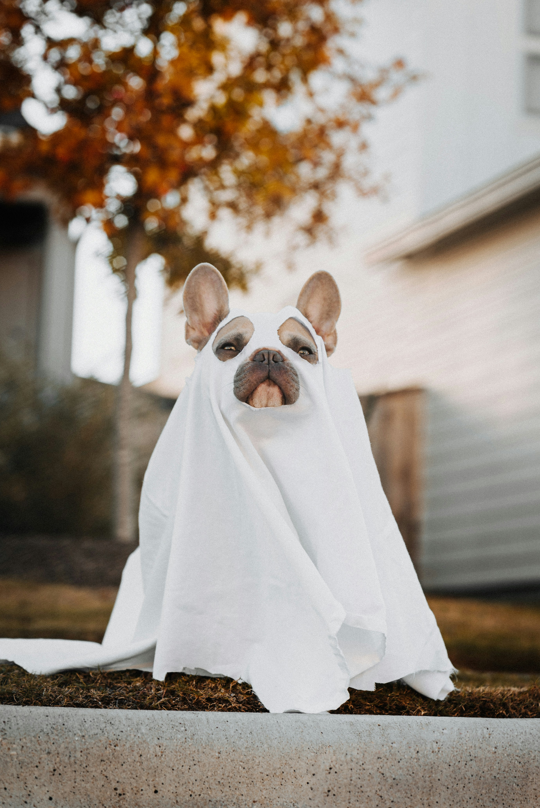

Halloween er det engelske namnet på allehelgensaftan, natta før allehelgensdag. Halloween har utvikla seg til ei høgtid der ein tek for seg døden og skumle idear i form av utkleding og pynt. Halloween blir som regel feira 31. oktober.
Til halloween knyter ein ofte skumle eller makabre element, som hekser, attergangarar, skjelett, flaggermus og svarte kattar. Det viktigaste symbolet er blitt jack-o'-lantern, eit graskar med utskore fjes og eit levande lys inni. Det er vanleg å kle seg ut, gjerne som noko skremmande, og halda selskap i samband med halloween. Særleg i USA er det vanleg for små ungar å gå husimellom og be om godteri, ein skikk som også har spreidd seg til andre land. Ein kan også brenna bål, dukka hovud etter eple, vitja skremmande attraksjonar eller sjå skumle filmar.
| Utkledning er ein historisk tradisjon | |
|---|---|
| Tradisjonelt | Skumle figurar som monstre, vampyrer, skrømt, skjelett, hekser og djevalar |
| Moderne tid | Mindre mørke figurar som kjendiasar, opdiktafigurar, piratar og prinsesser. |
| I Norge | "HalloVenn" har blitt innført som eit meir koseleg eller positivt alternativ. |